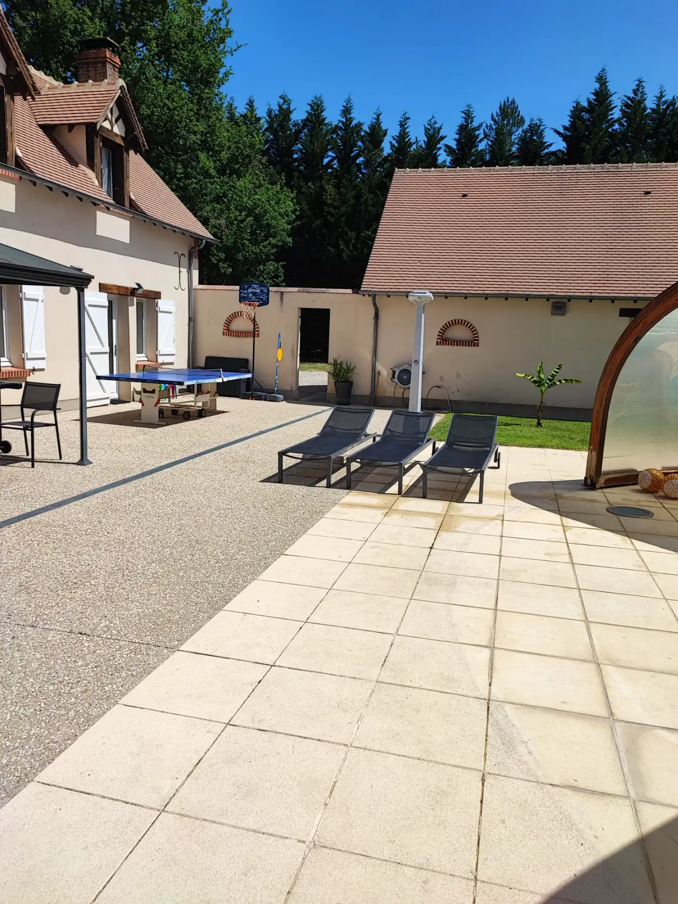
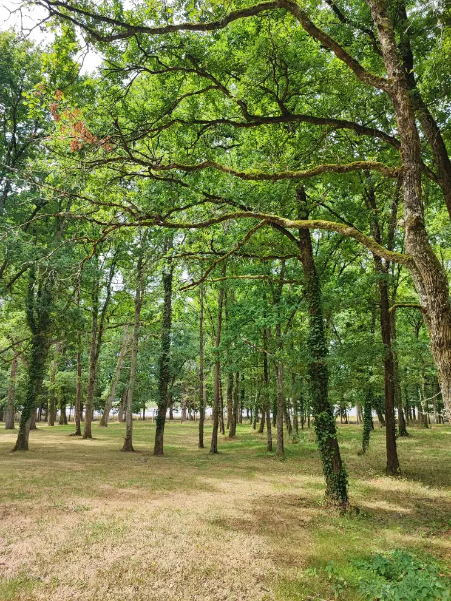
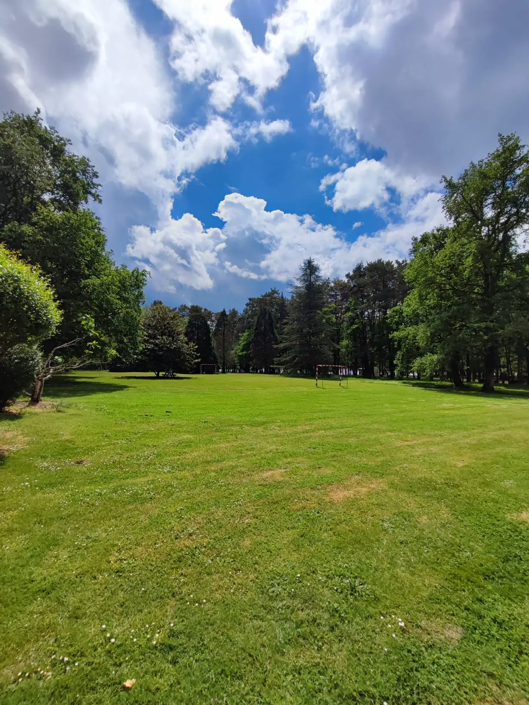
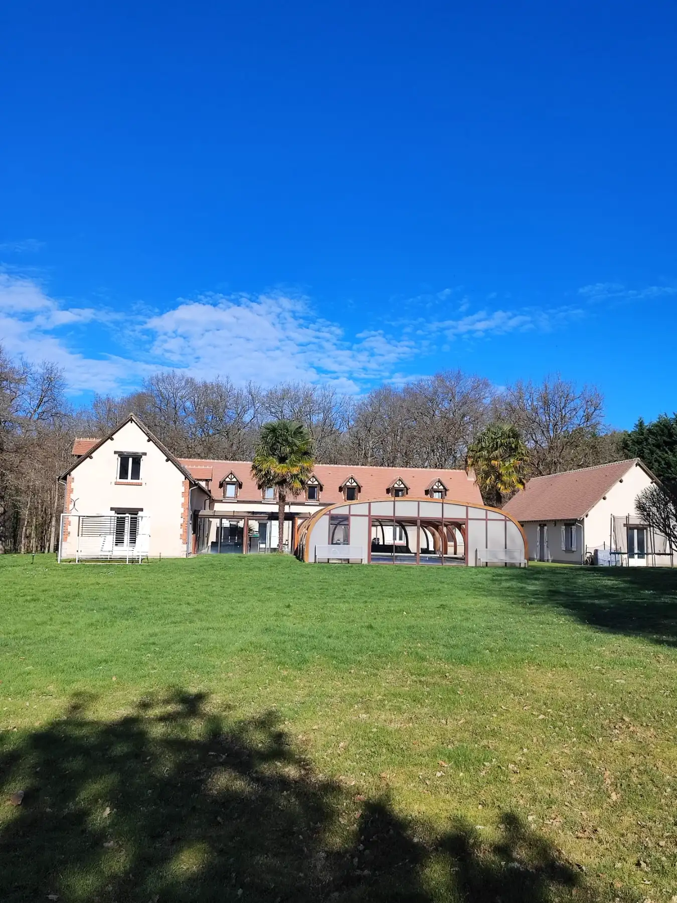
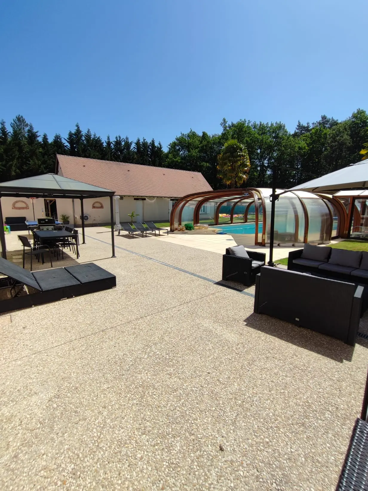
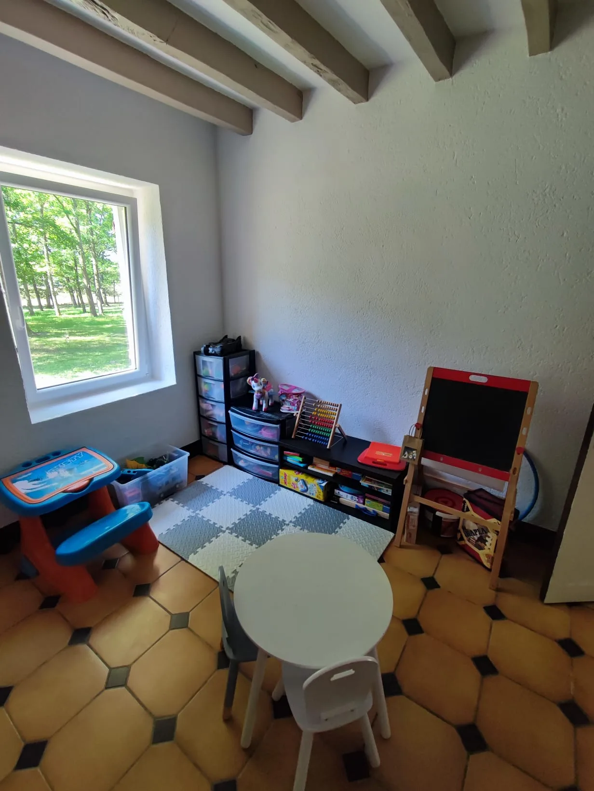
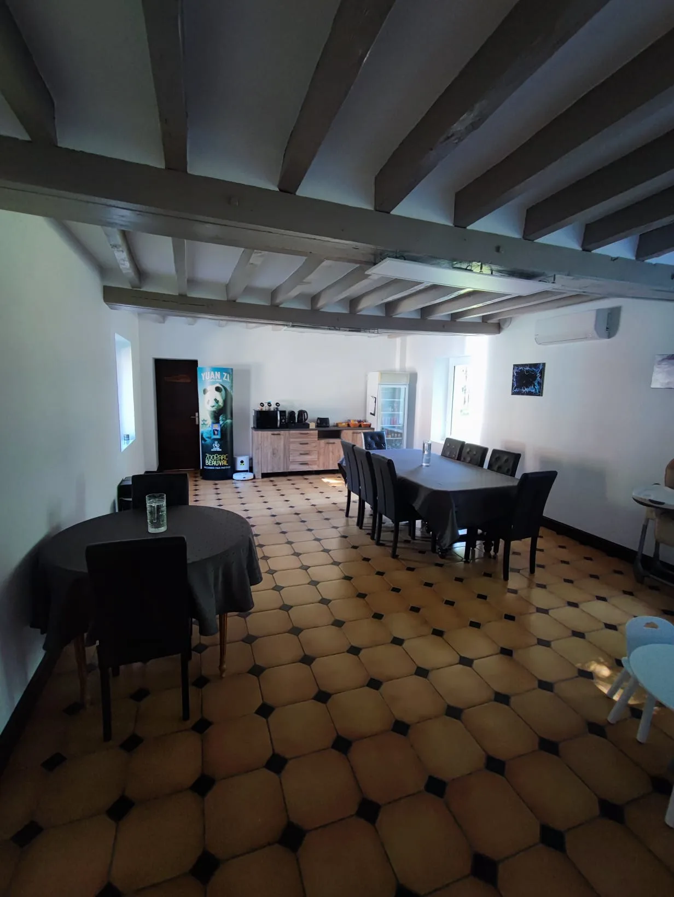
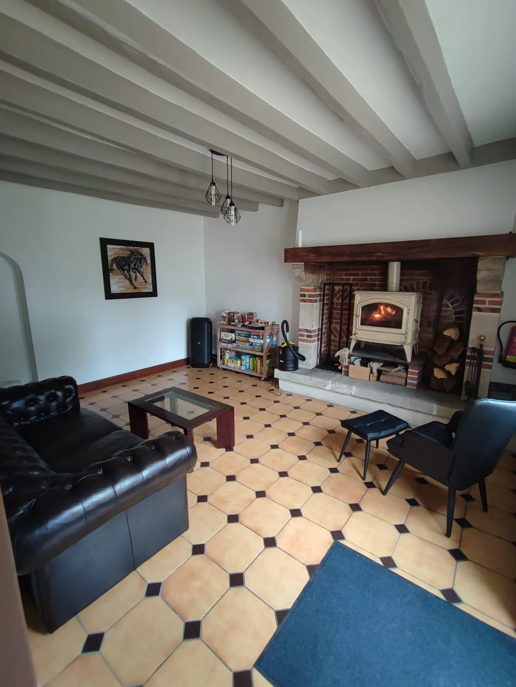

Chambre Figuier
Grande chambre familiale
Bienvenue dans la Chambre Figuier, située à l'étage et pouvant accueillir jusqu'à 8 personnes grâce à ces deux chambres dotées de lit 160x200,…
À partir de 130 € la nuit

Bienvenue à Lassay-sur-Croisne. Le domaine Sylvaria est un grand domaine boisé de 4 Ha qui possède 2 chambres d'hôtes et une piscine extérieure couverte (chauffée de Mai à septembre). Nous sommes ravis de vous accueillir pour votre séjour en chambre d'hôte.









Grande chambre familiale
Bienvenue dans la Chambre Figuier, située à l'étage et pouvant accueillir jusqu'à 8 personnes grâce à ces deux chambres dotées de lit 160x200,…
À partir de 130 € la nuit

Suite thème nature
Bienvenue dans la Chambre Figuier, située au rez-de-chaussée, cette chambre permet d'accueillir 2 personnes. Elle dispose de sa propre salle de…
À partir de 100 € la nuit
4,8 / 5 sur 60 avis de voyageurs
« Hôte aimable et très acceuillante. Joli endroit paisible. Très belle maison, propre et bien équipée. Piscine chauffée propre et opérationnelle. L’hôte cuisine aussi très bien. Nous avons pris le dîner et le petit déjeuner, c’était succulent! Petit bonus, elle a également bien voulu garder notre chienne pendant le séjour. Je recommande! Remarque laissée par Andry Visible uniquement par vous et Airbnb Nous vous remercions pour votre acceuil et pour ce séjour très agréable. C’était impeccable. Nous vous recommanderions c’est sur. Et si un jour nous revenons à Beauval ce serait toujours un plaisi »
Andry · septembre 2026 · Airbnb
« Un petit coin de paradis pour les grands et les petits ! Nous avons passé une merveilleuse semaine chez Élodie ! Le domaine est magnifique, très arboré et au calme. La grande piscine a fait le bonheur de toute la famille après nos journées de visites. L’accueil d’Élodie est vraiment exceptionnel. Elle est d’une gentillesse, d’une disponibilité et d’une attention rares. On sent tout l’investissement qu’elle met pour que ses hôtes se sentent bien et ne manquent de rien. Élodie est également une excellente cuisinière ! Les petits-déjeuners sont copieux, délicieux et entièrement faits maison. To »
Coralie · août 2026 · Google Avis
« Nous avons passé un merveilleux séjour d’une semaine chez Élodie. Le domaine est magnifique. Très arboré et au calme. Une grande piscine fait également partie du domaine et a fait le bonheur de toute la famille pour de longues sessions baignades après nos visites matinales. L’accueil d’Élodie est tout simplement incroyable. Elle est d’une gentillesse et d’une disponibilité admirables. On sent vraiment l’investissement pour que ses hôtes se sentent bien et ne manquent de rien. Élodie est également une excellente cuisinière ! Les petits-déjeuners sont copieux, délicieux et entièrement faits mai »
Coralie · août 2026 · Airbnb